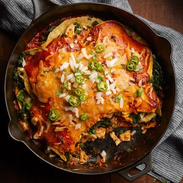
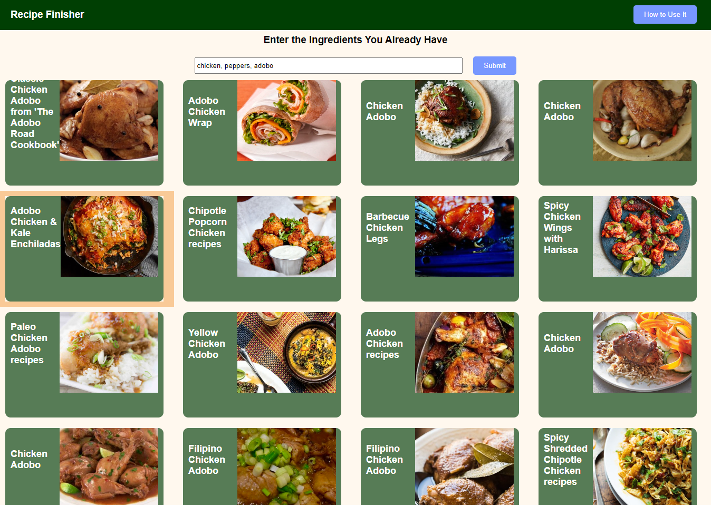
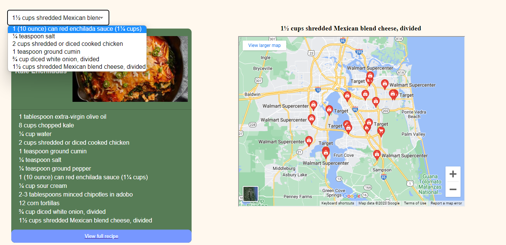

Recipe Finisher is an application that helps you find recipes based on the ingredients you already have.
Enter the ingredients you have in the search box and click the "Submit" button or press "Enter" on your keyboard.
Browse through the list of recipes that appear. You can hover over a recipe to see more details, including the ingredients and a link to view the full recipe.
Click on a recipe to select it. The selected recipe will be added to a list at the bottom of the page. You can also click on the link below to access the actual recipe on how to cook it.
Once you click on a ingredient, the stores near you for where the ingredient is held will appear in the map next to the recipe. You can also access a drop-down menu in case you selected multiple ingredients.
